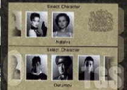
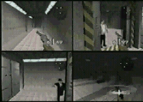
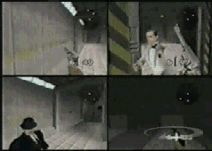
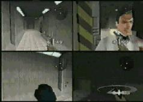
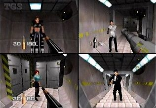
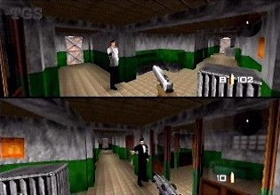

Voilà une bonne chose que l'on sait depuis longtemps : On ne peut PLUS jouer en Battle avec les autres James Bond. Tout a commencé par un Poisson d'Avril d'un Magazine. Mais il ne faut pas oublier que à un moment, lors du développement de Goldeneye, on pouvait bel et bien jouer avec eux en Battle !
Tout ce qui reste, ce sont 3 Photos que l'on peut ré-activer. Les Noms de Famille sont également dans la Cartouche (Connery, Dalton et Moore). George Lazenby n'y figure pas, n'étant certainement pas le plus connu. On pense qu'il a été enlevé car il ne fallait que 4 Bonds, pour un Battle Spécial Bonds.
Depuis, des Joueurs ont trouvé le moyen de faire réapparaître les Anciens Costumes, notamment le Costard Blanc de Sean Connery (bien qu'il soit Noir sur sa Photo) ! Mais les Têtes sont parties...

Sean Connery
Sean Connery est connu pour le Costume Blanc de Goldfinger, qui n'apparait pourtant que dans une courte Scène, avec la Rose. Toutes les Images Beta de Goldeneye attestent que Connery était bel et bien le Personnage au Costume Blanc. On en trouve d'autres glanées à droite à gauche (même dans le Livret d'Instructions !).











Timothy Dalton
Jusqu'ici, Connery était le seul vraiment visible des Bonds Disparus. Mais dans le Livret d'Instructions, ce que l'on croit être le Costume de Brosnan est en fait celui de Dalton ! Quand Brosnan est vu de cette façon, on voit le Machin Blanc, alors que là, non. Dans le Costume de Perfect Dark, il est également clairement visible.


Le Pourquoi de la Disparition des autres Bond
Beaucoup de choses furent virées du Jeu, mais celle-ci ne relève pas de problèmes de Mémoire de la Cartouche. Quatre Personnages en plus n'auraient pas gêné Rare. La Théorie la plus évidente est celle du Copyright. Apparemment, Timothy Dalton a eu des problèmes avec la MGM, ne voulant plus jamais être avec eux dans aucun Film. Ceci explique le fossé entre License To Kill et Goldeneye (1989 - 1995). Après que le Film Goldeneye soit sorti, Rare s'est mis au travail, et a voulu mettre les Anciens Bonds. Mais Dalton ne fut pas d'accord, ne voulant plus jamais etre associé à James Bond. Déjà un de moins. Il fut retiré, mais certaines photos le montrent encore. Rare n'a pas remplacé Dalton par Lazenby, car il n'était pas assez populaire, et effaça Dalton de la Cartouche purement et simplement.
Rare parle : Oui, c'était un truc que l'on voulait absolument mettre dans le Jeu, mais qui fut retiré pour des raisons différentes. Vous serez surement interessés par le fait que ces 4 Bonds devaient s'affronter dans un Battle où le premier à 100 Points était Vainqueur.
Notez que Rare admet que les autres Bonds furent dans le Jeu, ce qu'ils ne font pas d'habitude si facilement. On pense que les autres Bonds étaient débloqués par un Cheat comme quand on finit Cradle et que l'on a plus de Personnages en Battle. Le fait que Rare ait quand même laissé traîner pleins d'images de Connery est sûrement un Mystère qu'ils voulaient que l'on découvre, avec spéculations etc.